HISTORIA
Hallownest era un reino próspero creado por el Rey Pálido, quien dotó de conciencia a los insectos frente a la influencia salvaje de "El Destello". Sin embargo, esta entidad regresó como una infección que consumía las mentes, obligando al Rey a crear Recipientes de Vacío para contenerla. El Hollow Knight fue elegido como sello, pero su impureza permitió que la plaga escapara, provocando la caída del reino. Tú, un recipiente descartado, regresas a las ruinas para romper los sellos de los Soñadores y enfrentar tu destino. El final depende de si decides perpetuar el ciclo de contención o destruir el origen de la luz para siempre.
OPINIÓN
Opinión personal sobre el juego
Hollow Knight es un juego muy desafiante pero muy disfrutable. Puedes perderte en las maravillas del mundo a la misma vez que luchas por acabar con la infección y hacerte un nombre en Hallownest.
Es uno de los juegos que más me ha costado completar sus logros debido a la gran dificultad del contenido final del mismo. Eso no me ha echado nunca atrás, al contrario, me ha hecho disfrutar aún más del reto que suponía.
La nota que le doy es un 10/10, es brillante en todos sus aspectos, tanto historia, como ambientación como jugabilidad.
PERSONAJES
MERCADERES
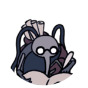
Cornifer
Cuando Cornifer fue incubado por primera vez, se alejó de inmediato, dejando atrás a sus hermanos y a su madre. Finalmente se casó con Iselda, y luego se mudó a Bocasucia con ella tan pronto como pudo.
A Cornifer se le puede encontrar en cada zona para la que vende un mapa. Papeles esparcidos por el suelo conducen a su ubicación y su tarareo se puede escuchar desde el otro lado de la habitación.
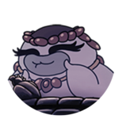
Salubra
La tienda de Salubra se encuentra sobre la aldea abandonada al fondo de las Encrucijadas Olvidadas, cerca del Lago Azul. Ella es conocedora del oficio y el uso de los Amuletos y los comparte con entusiasmo con otros a cambio de Geo.
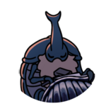
Herrero de Aguijones
El Herrero de Aguijones es uno de los pocos insectos que sobrevivieron a la caída de Hallownest. Impulsado por su oficio y trabajando en reclusión, apenas notó el mundo cambiando a su alrededor.
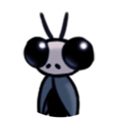
Sly
Sly solía ser el Gran Maestro de aguijones. Durante su ocupación anterior, entrenó a algunos discípulos en las Artes de los aguijones: Oro, Mato y Sheo.
Eventualmente, Sly abandonó su ocupación como Maestro de los aguijones y se dedicó a la vida sencilla de un mercader, encontrando y vendiendo mercancías de su tienda en Bocasucia. Sin embargo, no olvidó su maestría y respeto por el aguijón y por quienes practican sus artes. Guarda su gran aguijón en el sótano de su tienda y aún recuerda a sus alumnos.
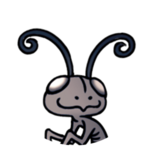
Comepiernas
Comepiernas es ciego pero tiene un poderoso sentido del olfato. Es un bicho reservado que reacciona con ira ante cualquier amenaza que pueda percibir. Está obsesionado con ganar Geo, creyendo que si tiene suficiente, lo convertirá en rey. A pesar de su propia codicia, es propenso a acusar a otros del mismo pecado, incluso injustamente.
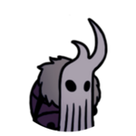
Buscador de reliquias Lemm
Lemm se mudó a su tienda en la Ciudad de las Lágrimas en algún momento después de que el lugar ya estaba vacío y todos en la torre estaban muertos.Explora su ubicación actual y codicia antigüedades, obteniendo cualquier información sobre la historia de la tierra.
Si bien Lemm discute felizmente sus descubrimientos e hipótesis, protege su colección y no está dispuesto a vender nada de ella. No busca compañía a menos que le traigan más material para su colección.
MAESTROS DE AGUIJÓN
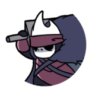
Mato
Mato aprendió las Artes de Aguijón del Gran Maestro de aguijones Sly junto con sus hermanos Oro y Sheo. No era el discípulo más hábil de los tres, siendo su movimiento favorito el Tajo Ciclónico. Sin embargo, sentía pasión por enseñar y esperaba perpetuar el conocimiento del Maestro de aguijones a la próxima generación de Maestros de aguijones. Su devoción por las Artes de Aguijón lo acercó mucho a su hermano Sheo, el más talentoso.
Cuando los tres discípulos se convirtieron en Maestros del Aguijón confirmados, Mato decidió no volver a ver a su antiguo maestro antes de dominar sus enseñanzas. Estableció una cabaña en la cima del mundo en los Acantilados Aulladores para seguir perfeccionando sus habilidades. Sin embargo, no se separó de Oro en buenos términos, y aún espera la promesa que su hermano le hizo.
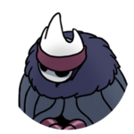
Oro
Oro aprendió las Artes de Aguijón del Gran Maestro de aguijones Sly junto con sus hermanos Mato y Sheo. De los tres discípulos, no era el más hábil, siendo su movimiento característico el Tajo en Carrera. Si bien Oro respeta las enseñanzas del Maestro de aguijón, se mostraba reacio a obedecerlas al pie de la letra.
Oro siempre parecía atormentado por algo. Después de una pelea entre los Maestros del aguijón, eligió mudarse en reclusión. No dejó a su hermano Mato en buenos términos y todavía le debe algo. Estableció una cabaña en los confines de Confines del Reino para evitar la compañía.
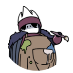
Sheo
Sheo aprendió las Artes de Aguijón del Gran Maestro de aguijones Sly, junto con sus hermanos Oro y Mato. A pesar de su comportamiento distante y amable, era el discípulo más hábil, impulsado únicamente por su deseo de fuerza y el dominio de sus habilidades. Sin embargo, esta pasión se desvaneció con el tiempo, ya que deseaba explorar nuevas formas de arte que pudieran conmoverlo. Todavía tenía una buena relación con sus dos hermanos y respetaba a su maestro.
Después de un tiempo, Sheo colgó su aguijón para convertirse en artista. Estableció una cabaña en un rincón lejano del Sendero Verde donde experimenta varias formas de arte creativo en paz. Espera poder mostrarle a su antiguo maestro lo lejos que ha llegado en su oficio.
PERSONAJES RELEVANTES
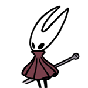
Hornet
Hornet es la hija del Rey Pálido y Herrah la Bestia, la reina de Nido Profundo. Su nacimiento fue el resultado de un trato para que su madre se convirtiera en un Durmiente, y como tal, solo pasó poco tiempo con Herrah. Su padre compartido con el Caballero y el resto de los Vasos los convierte en hermanos.
Criada en Nido Profundo, Hornet sobrevivió a la infección y a la caída del reino. Deambula por sus ruinas, ahuyentando a los viajeros que buscarían profanarlas, pero también protegiendo el sellado del Huevo Negro. También guarda la Cáscara Vacía en el Borde del Reino, que puede otorgar la Marca del Rey, la llave del Abismo. En sus deberes, se encontró con Quirrel en los Acantilados Aulladores a su llegada a Hallownest. Intentó luchar contra él, pero fue repelida por la máscara de Monomon que lleva en la cabeza. Hornet lo deja en paz después de reconocer la máscara, sabiendo que fue llamado, a pesar de que él no lo sabe.
Como Quirrel y el Caballero, sintió el despertar de la infección y comenzó a vagar por Hallownest en busca de respuestas.
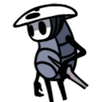
Quirrel
Antes de la caída de Hallownest, Quirrel solía ser el aprendiz de Monomon. Cuando Monomon se convirtió en Soñadora, le confió a Quirrel su máscara, que era parte de una protección adicional que se impuso a sí misma. Se puede ver a Quirrel usando esta máscara en la parte superior de su cabeza.
Quirrel perdió gran parte de su memoria con el tiempo. Monomon lo llamó de vuelta a Hallownest para revertir la protección que se le había impuesto. Tenía sueños de Hallownest; la Ciudad de las Lágrimas, el Cañón de Niebla, la Encrucijada Olvidada, el Templo del Huevo Negro y el Hollow Knight. Después de entrar en los Acantilados Aulladores, Quirrel se encuentra con Hornet, con quien lucha brevemente. Hornet permite que Quirrel entre en Hallownest cuando reconoce la máscara de Monomon.
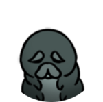
Larva padre
La larva padre es el patriarca envejecido de una colonia de larvas que hacen su hogar en una habitación en los Cruces Olvidados. Las larvas son criaturas inofensivas que tienen un buen sentido de la orientación y son muy hábiles excavadores. Se sabe que recolectan cosas brillantes en sus madrigueras, como Geo y Reliquias.
Debido a razones misteriosas, todos los hijos de la larva padre desaparecieron. Las larvas se pueden encontrar atrapadas en frascos en varios lugares de Hallownest, encerrados allí por el Coleccionista.
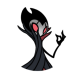
Jefe de la compañía Grimm
Grimm es el maestro de la Compaía Grimm, un misterioso circo ambulante. En realidad, Grimm y su compañía viajan desde el Reino de la Pesadilla a dondequiera que la Linterna de la Pesadilla haya sido encendida por acólitos. Recolectan Llamas de Pesadilla de tierras arruinadas para alimentar al siniestro ser al que sirve la compañía, el Corazón de la Pesadilla.
Su ritual para alimentar el Corazón de la Pesadilla consiste en alimentar primero a un Hijo del Grim con Llamas de Pesadilla. Luego matan al Rey de la Pesadilla para que renazca de nuevo a través del Hijo del Grim.
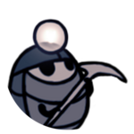
Myla
Mientras busca algo valioso escondido en lo más profundo de los cristales, disfruta cantando y quiere componer algunas canciones propias. Myla escucha a los cristales cantar y susurrar, esperando encontrarlos y oír lo que dicen.